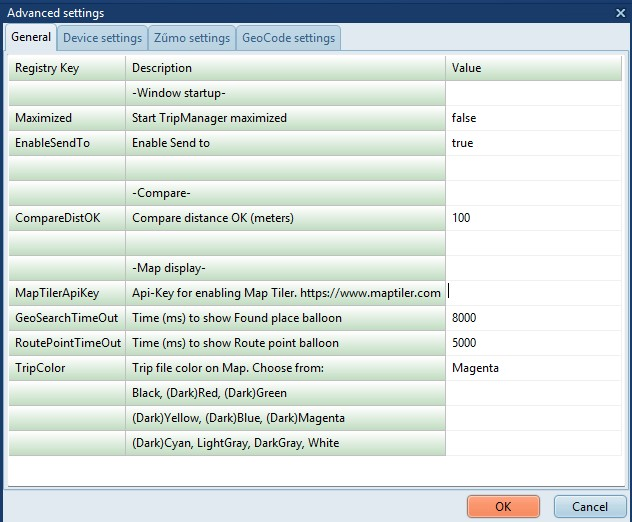

|
Overview |
Previous Next |
|
|
|
Help/About
Shows the Version.
Help/Online documentation
Opens a link to the offline documentation
Open a link to the online documentation
|
 |
|
Advanced/Settings
Opens a dialog where you can view/edit
TripManager settings.
Enabling GeoCoding needs to be done on
the GeoCode settings tab where you should
enter an Api_key
|

|